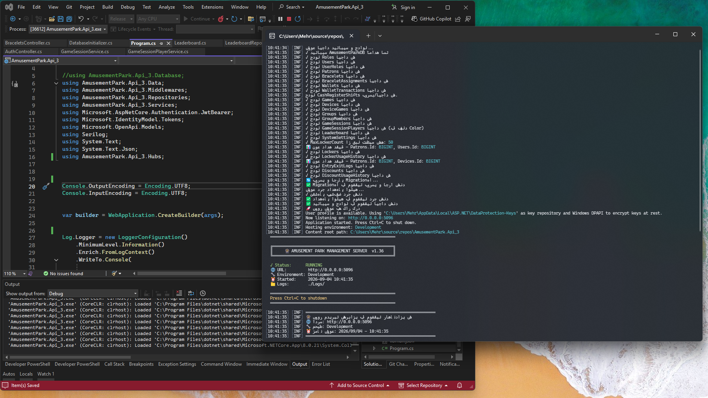

سرور مرکزی مدیریت شهربازی Infinity
طراحی و پیادهسازی کامل سرور داخلی تحت شبکه Local/LAN برای اتوماسیون و مدیریت عملیات
شهربازی Infinity، شامل فروش، مدیریت کاربران، مشتریان، دستبندهای NFC، کیف پول دیجیتال،
صندوق، بازیها، دستگاهها، گیتهای ورود و خروج، تخفیفها، لیدربورد و گزارشات مدیریتی.
- کارفرما: شرکت رابینتک
- مدت زمان: حدود ۴ ماه، شامل توسعه اولیه، رفع خطا، بهینهسازی و توسعه تکمیلی
- نقش: طراح، توسعهدهنده بکاند و مجری کامل پروژه
- نوع اجرا: سرور داخلی تحت شبکه Local/LAN
- حوزه کاربرد: مدیریت یکپارچه عملیات شهربازی، پرداختها، کاربران، دستگاهها و گزارشات
ASP.NET Core Web API
C#
MySQL
Dapper
JWT
SignalR
Serilog
NFC Integration
Wallet System
Local/LAN

اپلیکیشن دسکتاپ مدیریت شهربازی RabinTech
طراحی و توسعه اپلیکیشن دسکتاپ مدیریتی برای کنترل عملیات شهربازی در بستر شبکه داخلی،
شامل مدیریت مشتریان، دستبندهای NFC، کیف پول دیجیتال، صندوق، شیفتهای کاری، تخفیفها،
بازیها، دستگاهها، لاکرها، کیوسکها، ورود و خروج و گزارشات مالی. این نرمافزار با معماری
API-Driven پیادهسازی شده و از احراز هویت، مدیریت نقشها و ارتباط پایدار با سرور مرکزی پشتیبانی میکند.
- کارفرما: شرکت رابینتک
- نوع اجرا: اپلیکیشن دسکتاپ تحت شبکه Local/LAN
- نقش: توسعهدهنده اصلی Desktop Client و پیادهسازی فرمها، سرویسها و منطق ارتباط با API
- معماری: WinForms Client متصل به Backend API با مدیریت توکن و سطح دسترسی
- قابلیتهای کلیدی: مدیریت NFC، کیف پول، POS، صندوق، کیوسک، دستگاهها، بازیها و گزارشات
C#
WinForms
REST API
HttpClient
JWT Authentication
RBAC
NFC Integration
Wallet System
POS Integration
Kiosk Mode
Cash Register
Local/LAN
Async/Await

کلاینت تاچ Unity برای دستگاههای شهربازی
طراحی و توسعه کلاینت Unity برای اجرا روی دستگاههای All-in-One تاچ در شهربازی.
این نرمافزار با اتصال به سرور مرکزی، بازیکنان را از طریق دستبند NFC شناسایی میکند،
موجودی کیف پول را بررسی میکند، امکان انتخاب بازی و بازیکنان گروهی را فراهم میسازد
و پس از کسر شارژ، مجوز شروع بازی را برای دستگاه صادر میکند.
- کارفرما: شرکت رابینتک
- نوع اجرا: کلاینت Unity مخصوص دستگاههای تاچ All-in-One
- نقش: توسعهدهنده کلاینت Unity و پیادهسازی ارتباط با API، NFC و جریان شروع بازی
- قابلیتهای کلیدی: شناسایی NFC، انتخاب بازی، نوبتدهی بازیکنان، مدیریت گروهی و کنترل شروع Session
Unity
C#
UnityWebRequest
REST API
NFC Integration
Touch UI
All-in-One Device
JWT Authentication
Game Session
State Machine